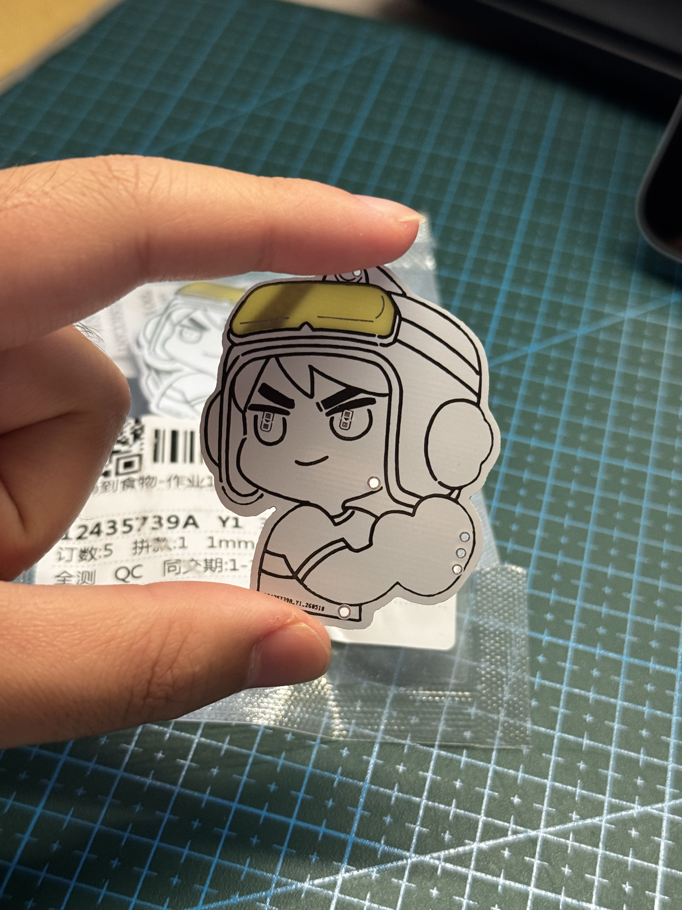

PCB设计学习
概述
本周重点学习了PCB（印制电路板）设计。将电路原理转化为实际的物理板材，并尝试将硬件工程与艺术设计结合，制作了专属的文创PCB，同时完成了指定电路板的复刻任务。
概述
本周进入了硬件开发的关键环节——PCB（印制电路板）设计的学习。课程完成了从理论到工程实践的跨越，不仅要求掌握将抽象的电路原理图转化为物理板卡的工程方法，还需要在受限的二维/三维空间中权衡电气性能、机械结构与工艺成本。本周通过“全流程理论学习”、“个性化校庆文创板卡设计”以及“经典电路板精密复刻”三大核心任务，建立起了完整的硬件开发思维。
1. PCB设计核心流程与工程规范
现代PCB设计是一项高度专业化的工业流程，本周课程深入解析了以下核心环节的技术内涵：
- 原理图设计与电气规则检查： 原理图是电路逻辑的具象化表达。在此阶段，不仅要正确连接器件引脚、构建清晰的层次化网格，还必须严格执行电气规则检查。重点排查了悬空引脚、驱动冲突以及网络标签拼写错误等隐患，确保逻辑网表的绝对正确。
- 元器件选型与封装精细匹配： 确立逻辑关系后，需将电气符号映射为真实的物理实体。课程学习了如何解读元器件数据手册，重点理解了插装元件与贴片元件的工艺差异。设计中必须严格校对引脚间距、焊盘尺寸以及机械外形轮廓，防止打样后因封装误差导致元件无法焊接。
- 模块化布局与信号完整性初探： 布局决定了PCB性能的上限。实践中遵循“先大后小、先主后次、模块化布局”的原则。优先放置核心微控制器与核心接插件，再以模块为单位聚集外围电路。 同时引入了信号完整性与抗干扰考量：强电与弱电分离、数字基带与模拟信号分区；去耦电容必须严格紧贴微控制器的电源引脚放置，以最大限度滤除高频噪声。
- 多层布线策略与设计规则检查： 布线是实现电气连接的实体化过程。本周重点训练了双层板的布线技巧。针对电源线与地线，依据电流载流量设定较宽的线宽（如20mil-30mil），而普通信号线则采用常规线宽（如8mil-10mil）；布线严格禁止走90°直角，统一采用135°折线或圆弧过渡，以避免高频信号下的阻抗突变与电磁辐射。 布线结束后，通过设定合理的安全间距和线宽限制，运行设计规则检查（DRC），实现软件层面的“零报错”。
- 大面积覆铜与地平面优化： 为增强电路的抗干扰能力并降低回路阻抗，页面设计尾声对空闲区域进行了大面积网络覆铜（通常连接至GND）。合理的覆铜能够起到良好的电磁屏蔽作用，并显著提升散热效率。
2. 文创PCB设计展示
利用所学的PCB布线与丝印技巧，我结合西南交通大学130周年校庆的主题元素，将Logo等视觉设计融入到了板卡外形和走线中。通过阻焊层开窗和走线布局，让电路板本身成为了一件具有纪念意义的艺术品。



在这个设计中，利用阻焊层大面积挖空来露出玻璃纤维基板的纹理，形成独特的视觉效果。同时，在原本图案里反光部分设计成了不透明并且在背面加入了灯珠，让光从两侧半透明部分透出来。
3. 作业2：电路板复刻展示
除文创设计外，本周还完成了作业2的电路板复刻任务。以下为复刻电路板的布局与布线设计图：


总结
PCB设计不仅是严谨的硬件工程，也可以是充满创意的表达方式。通过这次校庆文创产品的设计以及作业2的复刻练习，熟练掌握了EDA软件的操作，也对制造工艺有了更直观的认识。
下一步计划完成这批板子的打样并进行实物验证。